Se encuentra en la región de la torre de Necluda. Si has hablado con Ulmo en la Aldea Hatelia (en el huerto que hay al norte de la aldea, detrás de su casa) se habrá activado la Prueba heroica: el Tesoro de la fuente (si no lo has hecho da igual, puedes entrar en el santuario igualmente y completarás la prueba aunque no hayas hablado con él).
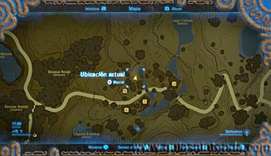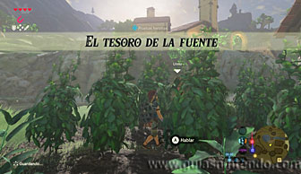
Este santuario está en la Fuente de la Sabiduría, escondida en el Monte Lanayru. Para llegar a ella necesitarás protegerte del frío con comida que cocines.
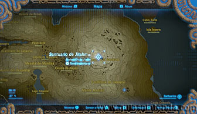
Nayen, el guardián de la fuente, ha sido corrompido por las fuerzas del mal y te impedirá entrar, para curarlo debes disparar flechas a esos residuos de maldad que le envuelven. Comienza disparando al ojo que tiene en la cabeza para que despierte y comience a volar. Entonces tendrás que seguirle saltando con la paravela, no te preocupes por caer lejos de él y perderle porque hay corrientes de aire ascendente en muchas zonas y podrás elevarte para seguirle fácilmente.
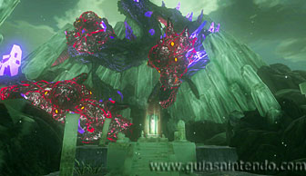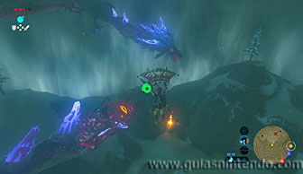
En el aire, cuando lo tengas a tiro, tendrás que sacar el arco y apuntar a los ojos que le rodean.
Cada vez que aciertes a uno desaparecerá y el objetivo es acabar con todos ellos. Vigila tu
indicador de resistencia, ya que al usar el arco (y ralentizar el tiempo) bajará rápidamente.
Si se acaba caerás sin poder frenar la caída, así que antes de que pase para en algún
lugar y después usa una corriente ascendente para volver a la pelea ya con el medidor de
resistencia al máximo.
Cuando lo consigas aparecerás automáticamente de nuevo en la fuente.
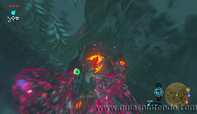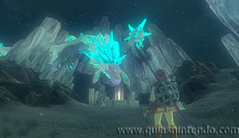
Ahora podrás coger la escama de Nayem y tendrás que depositarla en el agua de la fuente para abrir la entrada al santuario.
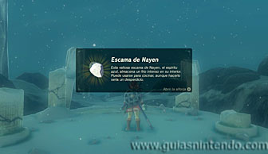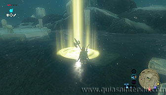
Ahora sí podrás entrar en el santuario a través del muro que se levanta. Entra dentro y en el camino al altar encontrarás un cofre que contiene la Lanza de hielo. Cuando subas al altar podrás examinarlo para obtener un símbolo de valía.
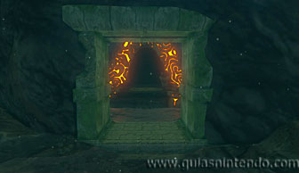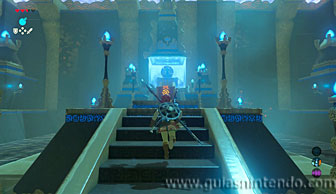